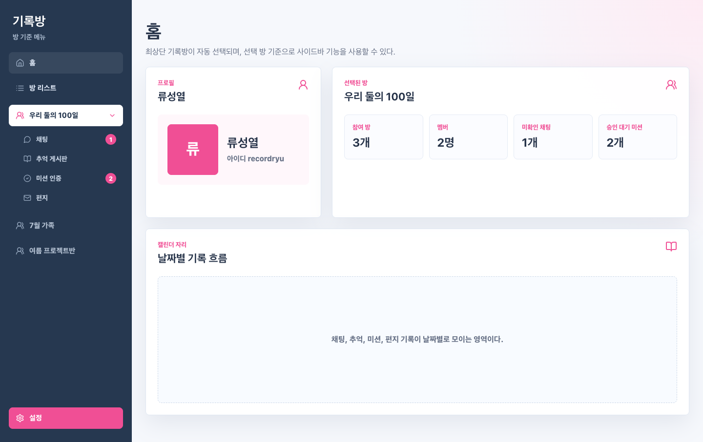
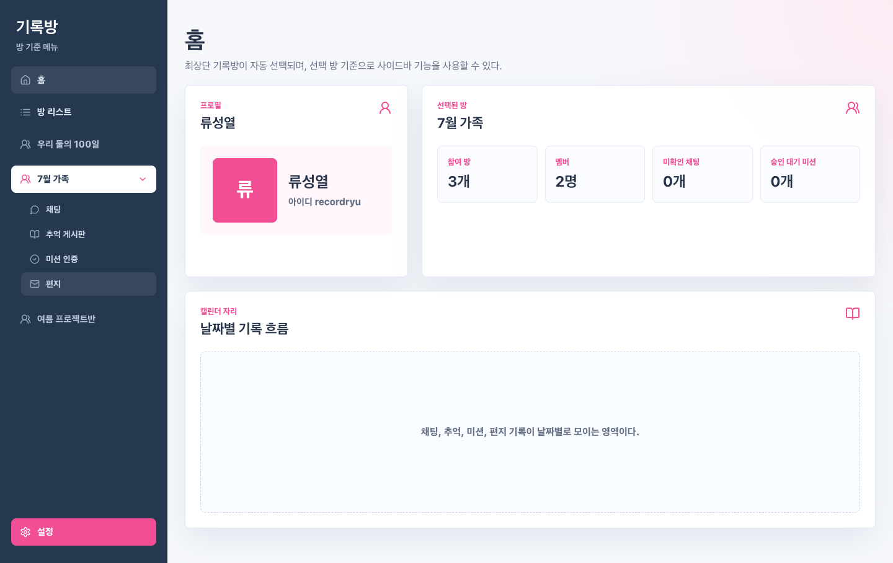
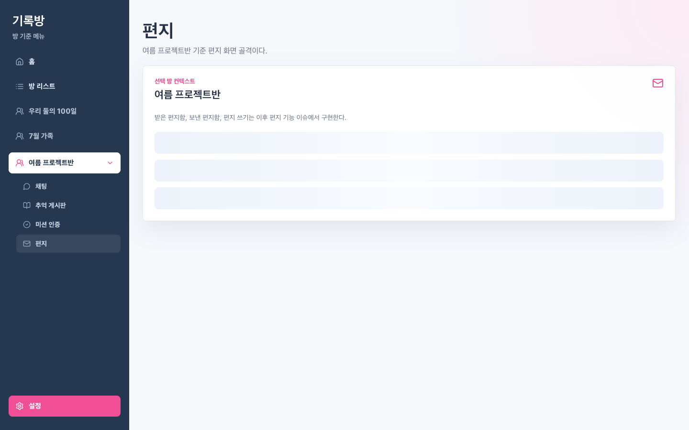
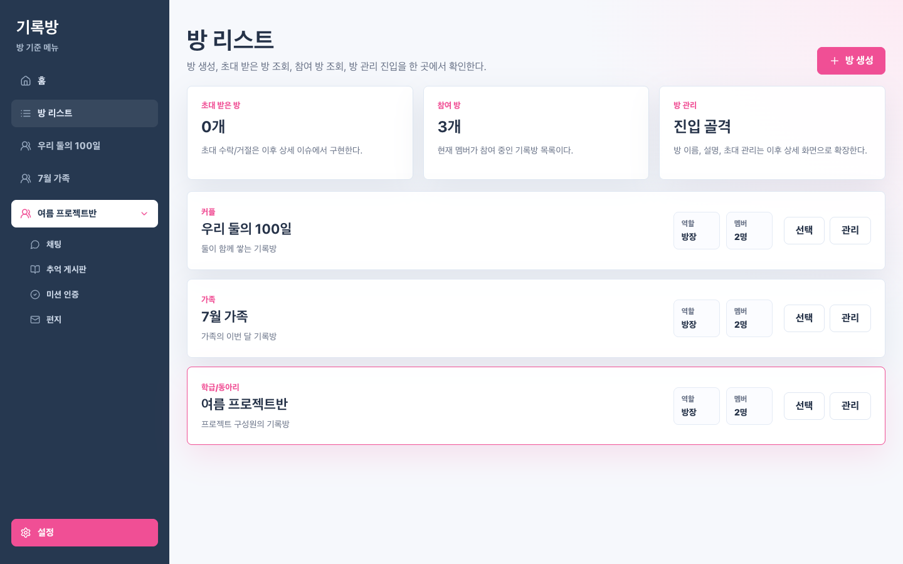

Issue #5 Focused QA 레포트
Human QA 수정본의 선택 방 하위 메뉴 위치 유지 동작을 재검증했다.
최종 판정: PASS
검증 대상
Issue: #5
브랜치: feature-5
수정 커밋: 5e9ca3c fix(rooms): 선택 방 하위 메뉴 위치 유지
리뷰 커밋: 70db409 docs(review): 이슈 5 Human QA 수정 재검토
검증 시각: 2026. 7. 31. PM 5:32:50
범위
QA Level: Focused QA
Full QA: 실행하지 않음
중점: 사이드바 방 목록, 선택 방 inline 펼침, placeholder 이동, 방 리스트/설정 진입
판정 요약
BLOCKER/CRITICAL 없음.
- 브라우저 기본 favicon.ico 요청 404는 앱 JS/API 오류가 아니므로 non-blocking으로 분리했다.
검증 항목
| 그룹 | 항목 | 결과 | 상세 | 증거 |
|---|---|---|---|---|
| Backend Smoke | GET /api/rooms 결과 기반 사이드바 표시 | PASS | 사이드바 방 개수: 3 | evidence/focused-01-home-default-room.png |
| Screen Spec Match | 최초 진입 - 방 목록 순서 유지 | PASS | 실제 순서: 우리 둘의 100일 > 7월 가족 > 여름 프로젝트반 | evidence/focused-01-home-default-room.png |
| Focused Function | 최초 진입 - 선택 방 | PASS | 선택 방: 우리 둘의 100일 | evidence/focused-01-home-default-room.png |
| Focused Function | 최초 진입 - 기존 위치에서 선택 | PASS | 선택 인덱스: 0, 기대 인덱스: 0 | evidence/focused-01-home-default-room.png |
| Focused Function | 최초 진입 - 하위 메뉴 inline 펼침 | PASS | roomBottom=255, submenuTop=259 | evidence/focused-01-home-default-room.png |
| Screen Spec Match | 최초 진입 - 하위 메뉴 구성 | PASS | 하위 메뉴: 채팅1 / 추억 게시판 / 미션 인증2 / 편지 | evidence/focused-01-home-default-room.png |
| Screen Spec Match | 7월 가족 선택 - 방 목록 순서 유지 | PASS | 실제 순서: 우리 둘의 100일 > 7월 가족 > 여름 프로젝트반 | evidence/focused-02-family-inline-expand.png |
| Focused Function | 7월 가족 선택 - 선택 방 | PASS | 선택 방: 7월 가족 | evidence/focused-02-family-inline-expand.png |
| Focused Function | 7월 가족 선택 - 기존 위치에서 선택 | PASS | 선택 인덱스: 1, 기대 인덱스: 1 | evidence/focused-02-family-inline-expand.png |
| Focused Function | 7월 가족 선택 - 하위 메뉴 inline 펼침 | PASS | roomBottom=311, submenuTop=315 | evidence/focused-02-family-inline-expand.png |
| Screen Spec Match | 7월 가족 선택 - 하위 메뉴 구성 | PASS | 하위 메뉴: 채팅 / 추억 게시판 / 미션 인증 / 편지 | evidence/focused-02-family-inline-expand.png |
| Screen Spec Match | 여름 프로젝트반 선택 - 방 목록 순서 유지 | PASS | 실제 순서: 우리 둘의 100일 > 7월 가족 > 여름 프로젝트반 | evidence/focused-03-project-placeholder.png |
| Focused Function | 여름 프로젝트반 선택 - 선택 방 | PASS | 선택 방: 여름 프로젝트반 | evidence/focused-03-project-placeholder.png |
| Focused Function | 여름 프로젝트반 선택 - 기존 위치에서 선택 | PASS | 선택 인덱스: 2, 기대 인덱스: 2 | evidence/focused-03-project-placeholder.png |
| Focused Function | 여름 프로젝트반 선택 - 하위 메뉴 inline 펼침 | PASS | roomBottom=363, submenuTop=367 | evidence/focused-03-project-placeholder.png |
| Screen Spec Match | 여름 프로젝트반 선택 - 하위 메뉴 구성 | PASS | 하위 메뉴: 채팅 / 추억 게시판 / 미션 인증 / 편지 | evidence/focused-03-project-placeholder.png |
| Focused Function | 채팅 placeholder 이동 | PASS | 본문에 '채팅' 및 '여름 프로젝트반 기준' 포함 | evidence/focused-03-project-placeholder.png |
| Focused Function | 채팅 이동 후 선택 방 위치 유지 | PASS | 선택 방: 여름 프로젝트반, index=2 | evidence/focused-03-project-placeholder.png |
| Focused Function | 추억 게시판 placeholder 이동 | PASS | 본문에 '추억 게시판' 및 '여름 프로젝트반 기준' 포함 | evidence/focused-03-project-placeholder.png |
| Focused Function | 추억 게시판 이동 후 선택 방 위치 유지 | PASS | 선택 방: 여름 프로젝트반, index=2 | evidence/focused-03-project-placeholder.png |
| Focused Function | 미션 인증 placeholder 이동 | PASS | 본문에 '미션 인증' 및 '여름 프로젝트반 기준' 포함 | evidence/focused-03-project-placeholder.png |
| Focused Function | 미션 인증 이동 후 선택 방 위치 유지 | PASS | 선택 방: 여름 프로젝트반, index=2 | evidence/focused-03-project-placeholder.png |
| Focused Function | 편지 placeholder 이동 | PASS | 본문에 '편지' 및 '여름 프로젝트반 기준' 포함 | evidence/focused-03-project-placeholder.png |
| Focused Function | 편지 이동 후 선택 방 위치 유지 | PASS | 선택 방: 여름 프로젝트반, index=2 | evidence/focused-03-project-placeholder.png |
| Focused Function | 방 리스트 골격 - 방 생성 | PASS | 본문에 '방 생성' 포함 | evidence/focused-04-room-list.png |
| Focused Function | 방 리스트 골격 - 초대 받은 방 | PASS | 본문에 '초대 받은 방' 포함 | evidence/focused-04-room-list.png |
| Focused Function | 방 리스트 골격 - 참여 방 | PASS | 본문에 '참여 방' 포함 | evidence/focused-04-room-list.png |
| Focused Function | 방 리스트 골격 - 방 관리 | PASS | 본문에 '방 관리' 포함 | evidence/focused-04-room-list.png |
| Focused Function | 설정 화면 진입 유지 | PASS | 설정 본문 진입 확인 | evidence/focused-04-room-list.png |
| Runtime/UI | 명백한 console error 없음 | PASS | blocking console errors=0 | - |
| Runtime/UI | pageerror 없음 | PASS | pageerrors=0 | - |
| Runtime/UI | API/리소스 4xx/5xx 없음 | PASS | non-favicon 4xx/5xx responses=0 | - |
| Runtime/UI | 명백한 가로 UI 깨짐 없음 | PASS | viewport=1440, documentScrollWidth=1440, bodyScrollWidth=1440 | evidence/focused-04-room-list.png |
{kind=link}
{kind=link}
{kind=link}
{kind=link}
스크린샷 Evidence



